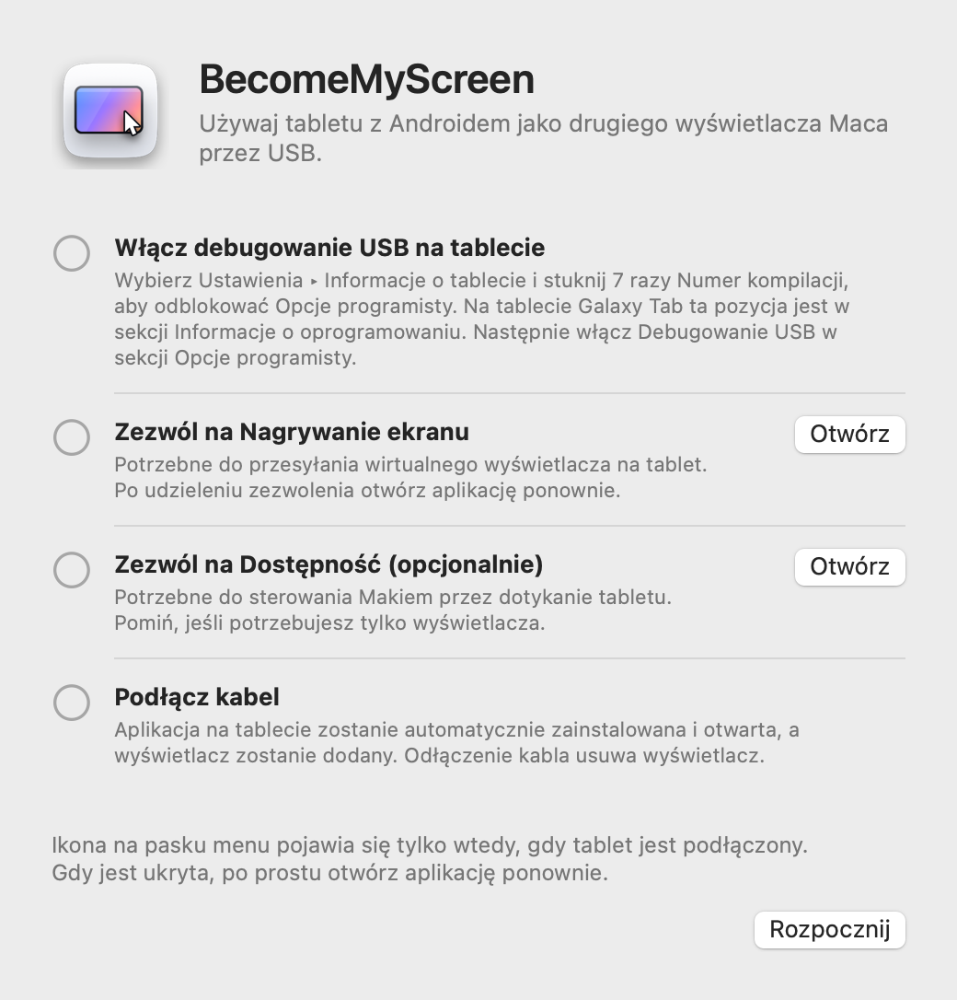
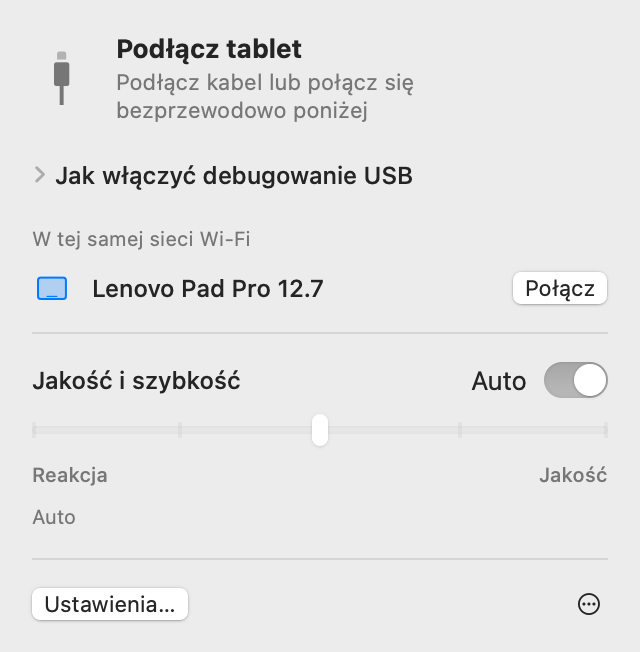
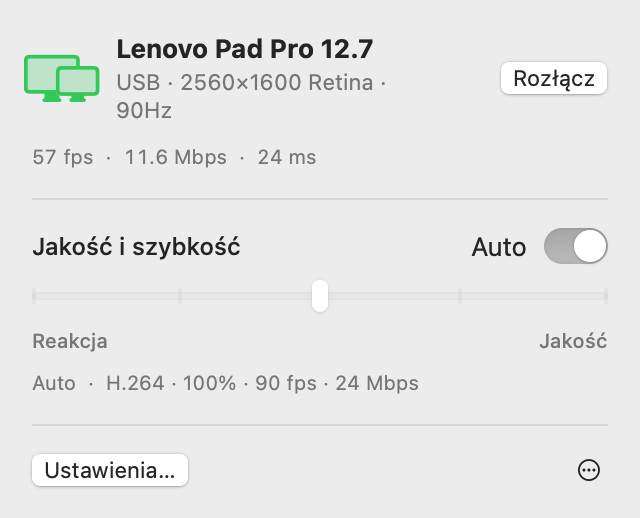
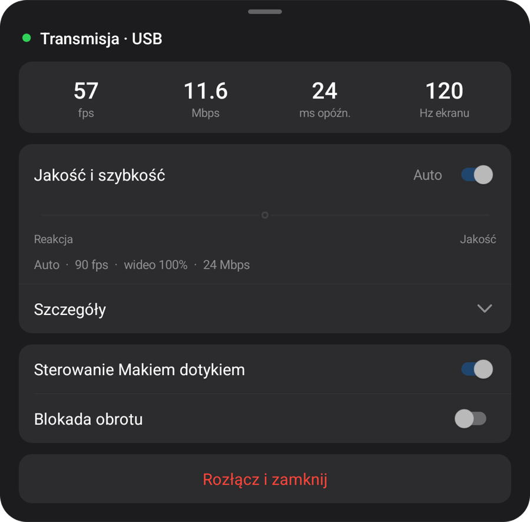
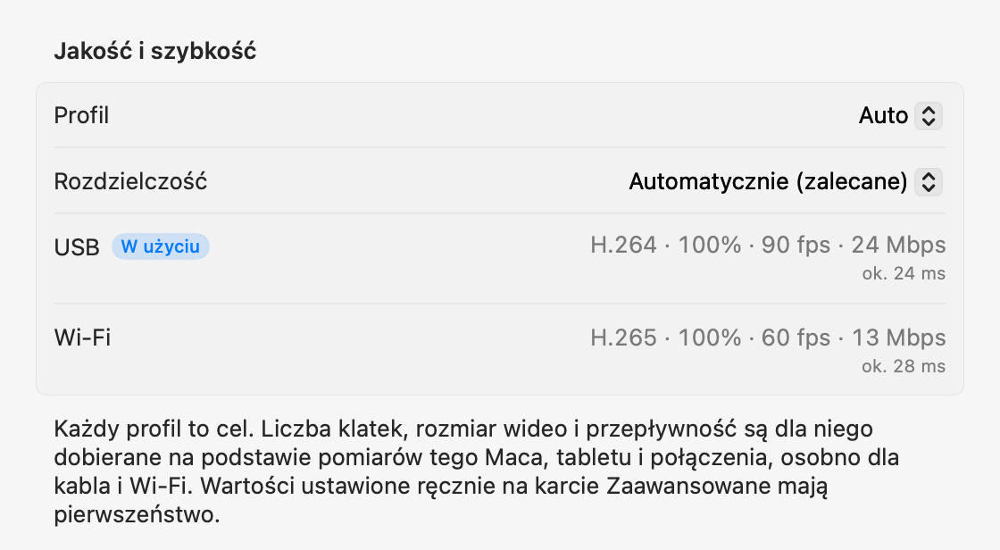

macOS + Wersja testowa Windows
Twój tablet.
Ekran Twojego komputera.
Dodatkowy ekran dla Maca. Wersja zapoznawcza klonowania obrazu dla Windows. Podłącz tablet z Androidem przez USB; komputer zainstaluje i otworzy aplikację na tablecie.
Otwórz plik zip, przenieś aplikację do folderu Aplikacje i otwórz ją. Informacje o pierwszym połączeniu znajdziesz w sekcji Konfiguracja.
Otwórz tę stronę na komputerze, aby pobrać aplikację na Maca lub Windows.

1.0.1 Preview 1
Wersja testowa Windows
Teraz na Windows 11. Natywne aplikacje Intel/AMD x64 i ARM64 w jednym pliku do pobrania.

Rozpakuj cały ZIP i uruchom Start-Mirroring.cmd. W maszynie wirtualnej użyj Start-Mirroring-VM.cmd. Włącz debugowanie USB na tablecie i zatwierdź połączenie. Silnik wideo pobierze się przy pierwszym uruchomieniu; potrzebny jest Internet.
Poniższe ustawienia, funkcje i pomiary dotyczą wersji na Maca. Dla Windows skorzystaj z powyższego przewodnika wersji testowej.
Konfiguracja
Konfigurację wykonujesz tylko raz. Potem podłączenie kabla dodaje wyświetlacz, a w tej samej sieci Wi‑Fi połączenie działa bez kabla.
-
Zainstaluj aplikację na Macu
Otwórz pobrany plik zip, przenieś BecomeMyScreen do folderu Aplikacje i otwórz aplikację. Zezwól na Nagrywanie ekranu, a następnie otwórz aplikację jeszcze raz.
-
Włącz debugowanie USB na tablecie
Wybierz Ustawienia › Informacje o tablecie i stuknij siedem razy Numer kompilacji, aby odblokować Opcje programisty. Na tablecie Galaxy Tab ta pozycja jest w sekcji Informacje o oprogramowaniu. Następnie włącz Debugowanie USB w sekcji Opcje programisty.
-
Podłącz kabel
Gdy tablet zapyta, czy zezwolić na debugowanie USB, zaznacz „Zawsze zezwalaj z tego komputera” i stuknij „Zezwól”. Mac zainstaluje i otworzy aplikację na tablecie, a następnie doda wyświetlacz. Nie trzeba osobno pobierać aplikacji na tablet.

Szybkość
Czas od przechwycenia ekranu przez Maca do jego narysowania przez tablet. Pomiary wykonano na tablecie Lenovo Pad Pro 12.7 i Macu z czipem M4 Pro.
| Rozmiar wideo | 60 fps | 120 fps |
|---|---|---|
| 100%2560×1600 | 20 ms | 24 ms |
| 75%1920×1200 | 14 ms | 19 ms |
| 50%1280×800 | 11 ms | 16 ms |
Sprzętowy koder w czipie Apple kompresuje obraz do H.264 i przesyła go przez USB, a sprzętowy dekoder tabletu rysuje każdą klatkę zaraz po jej odebraniu. Przy pierwszym połączeniu profil Auto mierzy, ile dekoder jest w stanie obsłużyć, i wybiera najwyższą liczbę klatek, przy której dekoder nie zostaje w tyle. Na tym tablecie wybrał 90 fps.
Metoda pomiaru: po skorygowaniu różnicy między zegarami obu urządzeń zmierzyliśmy czas od przechwycenia klatki przez Maca do narysowania tej klatki przez tablet.
Bezprzewodowo
Tablet połączony raz przez USB działa też bezprzewodowo w tej samej sieci Wi‑Fi. Odłącz kabel w trakcie pracy, a obraz będzie dalej przesyłany przez Wi‑Fi.
- Łączenie
- Otwórz aplikację na tablecie, a pojawi się on na liście „W tej samej sieci Wi‑Fi” na pasku menu Maca. Kliknij Połącz, a obraz się wyświetli.
- Odłączanie kabla
- Przełączenie na Wi‑Fi następuje w ciągu sekundy. Wirtualny wyświetlacz i układ okien pozostają bez zmian, a po ponownym podłączeniu kabla połączenie wraca do USB.
- Bezpieczeństwo
- Klucz do połączeń bezprzewodowych jest wymieniany wyłącznie przez kabel USB. Połączenie jest nawiązywane dopiero po weryfikacji klucza, a obraz i sterowanie są w całości szyfrowane za pomocą AES-256-GCM.
- Adaptacyjne tempo
- Tablet potwierdza każdą odebraną klatkę, a Mac pomija tyle klatek, ile wynosi zaległość, i dostosowuje przepływność. Nawet gdy Wi‑Fi na chwilę zwolni, opóźnienie się nie kumuluje.

| Połączenie | Opóźnienie | Uwagi |
|---|---|---|
| USB | Ok. 20–25 ms | Maksymalna liczba klatek tabletu |
| Wi‑Fi 5 GHz | 40–55 ms | 60 fps; przepływność rośnie automatycznie do poziomu ustawienia jakości |
| Wi‑Fi 2.4 GHz | 40–65 ms | Opóźnienie czasem skacze powyżej 100 ms, co może wyglądać jak zacinanie |
Pomiar na tablecie Lenovo Pad Pro 12.7 przy 2560×1600 i stale zmieniającej się zawartości. Jeśli tablet korzysta z Wi‑Fi 2,4 GHz, aplikacja proponuje przełączenie na 5 GHz.
Jakość i reakcja
Wybierz jeden z pięciu poziomów lub zostaw Auto. Zmień ustawienie na pasku menu Maca lub w menu tabletu, a obie strony zmienią się jednocześnie.
| Profil | Liczba klatek | Rozmiar wideo | Przepływność |
|---|---|---|---|
| Auto | 90 fps | 100% | 24 Mbps |
| 1Najszybsza reakcja | 120 fps | 50% | 8 Mbps |
| 2Szybka reakcja | 120 fps | 75% | 14 Mbps |
| 3Zrównoważony | 90 fps | 100% | 24 Mbps |
| 4Wysoka jakość | 90 fps | 100% | 33 Mbps |
| 5Najlepsza jakość | 60 fps | 100% | 39 Mbps |
Pomiary wykonano na tablecie Lenovo Pad Pro 12.7 (2560×1600, 120 Hz) podłączonym przez USB do Maca z czipem M4 Pro. Każdy profil to cel: na innym Macu lub tablecie, a także przez Wi‑Fi, jego wartości są wyznaczane na nowo na podstawie wykonanych tam pomiarów. Profil Auto odpowiada profilowi Zrównoważony.
Rozmiar wideo ustawia się niezależnie od rozdzielczości widzianej przez Maca. Mniejsze wideo nadal wypełnia ekran tabletu, a przy tym odpowiednio odciąża dekoder i zmniejsza opóźnienie.
Przy pierwszym połączeniu aplikacja w ciągu ok. 10 sekund mierzy kabel, koder wideo Maca i dekoder tabletu w każdym z jego trybów; za pierwszym razem przez Wi‑Fi mierzy sieć. Każdy profil jest dopasowywany do tych wyników oddzielnie dla kabla i Wi‑Fi, a na karcie Zaawansowane w ustawieniach możesz na stałe ustawić dowolną wartość dla każdego połączenia. Jeśli kabel jest wolny, pojawi się sugestia jego wymiany.



Dotyk
Dotyk na tablecie trafia do Maca jako sygnał myszy. Funkcja włącza się po zezwoleniu na Dostępność na Macu.
| Na tablecie | Na Macu |
|---|---|
| Stuknięcie | Kliknięcie |
| Przeciągnięcie palcem | Przeciągnięcie |
| Przeciągnięcie dwoma palcami | Przewijanie |
| Stuknięcie dwoma palcami | Kliknięcie prawym przyciskiem |
| Stuknięcie trzema palcami | Otwiera menu tabletu |
| Rysowanie rysikiem | Trafia do Maca jako sygnał z tabletu graficznego, z naciskiem i nachyleniem |
| Trzymanie rysika lub myszy nad ekranem | Przesuwa wskaźnik. Dotknięcie z wciśniętym przyciskiem rysika to kliknięcie prawym przyciskiem |
Wskaźnik, który wraca na miejsce
Gdy dotkniesz tabletu, wskaźnik Maca przesunie się w to miejsce. Wystarczy potem lekko poruszyć myszą, a wskaźnik wróci tam, gdzie był przed dotknięciem, więc nie musisz przeciągać go z powrotem do pracy na głównym wyświetlaczu. Możesz to wyłączyć w Ustawieniach.
Szczegóły
- Ikona na pasku menu
-
Jest widoczna tylko wtedy, gdy tablet jest podłączony. Gdy jest ukryta, otwórz aplikację ponownie, a ikona pojawi się na chwilę z otwartym panelem.
- Oczekiwanie
- Przygotowywanie
- W użyciu
- Wymaga uwagi
- Otwieranie aplikacji na tablecie
- Jeśli po podłączeniu kabla aplikacja na tablecie nie działa, Mac ją otwiera, a jeśli ekran jest wyłączony, wybudza go. Ekran blokady nigdy nie jest omijany.
- Uaktualnienia
- Aplikacja na Maca sprawdza nowe wersje i uaktualnia się, kiedy zechcesz. Jeśli zawiera nowszą aplikację na tablet, tablet zostaje uaktualniony przez kabel, zanim wyświetlacz się uruchomi.
- Orientacja pionowa
- Obróć tablet do pionu, a wirtualny wyświetlacz zostanie odtworzony również w pionie.
- Częstotliwość odświeżania i wygaszanie ekranu
- Podczas transmisji częstotliwość odświeżania tabletu jest utrzymywana, aby nie spadła do 60 Hz, a ekran się nie wyłącza.
- Kontrola kabla
- Jeśli USB łączy się z prędkością poniżej 480 Mbps, transfer nie przekracza 8 MB/s lub połączenie zostanie zerwane trzy razy w ciągu trzech minut, aplikacja zaproponuje użycie innego kabla lub portu.
- Gdy połączenie zostanie zerwane
- Jeśli kabel się wysunie, obraz jest dalej przesyłany przez Wi‑Fi. Jeśli nie da się kontynuować bezprzewodowo, wirtualny wyświetlacz jest przez chwilę zachowywany, a jeśli tablet w tym czasie połączy się ponownie, układ okien pozostanie bez zmian.
- Rozłącz i Połącz ponownie
- Kliknij Rozłącz na pasku menu, a obraz na tablecie zostanie wstrzymany, nawet przy podłączonym kablu. Kliknij Połącz ponownie, aby kontynuować.
- Aplikacja na tablecie zamyka się sama
- Gdy do tabletu nie jest podłączone nic, nawet ładowarka, aplikacja na tablecie zamyka się po 10 sekundach. Jeśli zamiast tego może czekać na połączenie bezprzewodowe, czeka 2 minuty.
Wymagania
- Mac
- Mac z czipem Apple, macOS 14 lub nowszy
- Windows
- Windows 11 · Intel / AMD x64 · ARM64 · Wersja testowa Windows
- Tablet
- Android 8.0 lub nowszy, na urządzeniu, na którym można włączyć debugowanie USB
- Kabel
- Kabel USB obsługujący transmisję danych. Kable tylko do ładowania nie połączą się. Port w samym Macu jest bardziej niezawodny niż koncentrator.
- Bezprzewodowo
- Mac i tablet muszą być w tej samej sieci Wi‑Fi; zalecane jest 5 GHz. Pierwsze połączenie musi być przez USB.
- Uprawnienia na Macu
- Nagrywanie ekranu. Dodatkowo Dostępność, aby sterować Makiem dotykiem, i Sieć lokalna, aby korzystać z połączenia bezprzewodowego.
Często zadawane pytania
Wersja testowa Windows
Ta wersja klonuje istniejący ekran. Windows zablokował instalację sterownika w naszym środowisku ARM64; na takich komputerach użyj ZIP. Rozszerzony pulpit na fizycznych komputerach x64 nie został jeszcze zweryfikowany. Informacje o wydaniu i ograniczenia
Czy muszę instalować aplikację na tablecie?
Nie. Aplikacja na tablet jest dołączona do aplikacji na Maca, więc po podłączeniu kabla Mac ją instaluje i otwiera. Gdy uaktualnisz aplikację na Macu, aplikacja na tablecie zostanie uaktualniona razem z nią przy następnym połączeniu.
Czy działa przez Wi‑Fi?
Tak. Po jednorazowym połączeniu przez USB tablet łączy się odtąd bezprzewodowo w tej samej sieci Wi‑Fi. Otwórz aplikację na tablecie i kliknij Połącz na pasku menu Maca albo po prostu odłącz kabel w trakcie używania. Opóźnienie jest nieco większe niż przez USB (40–55 ms przy 5 GHz), a Wi‑Fi 2,4 GHz może czasem powodować zacinanie, dlatego zalecane jest 5 GHz.
Dlaczego pierwsze połączenie musi być przez USB?
Ponieważ klucz do połączeń bezprzewodowych jest wymieniany wyłącznie przez kabel. Dzięki temu żadne inne urządzenie w tej samej sieci Wi‑Fi nie może podszyć się pod Twój tablet i połączyć się z Twoim Makiem. Wtedy też instalowana jest aplikacja na tablecie.
Czy działa nacisk rysika?
Tak. Nacisk i nachylenie rysika trafiają do macOS jako sygnał z tabletu graficznego (nacisk, nachylenie i zbliżenie). Aplikacja korzysta ze standardowej obsługi rysika w Androidzie, więc S Pen i rysiki Lenovo nie wymagają dodatkowego SDK ani sterownika. Przetestowano z rysikiem do Lenovo Pad Pro 12.7.
Z jakimi tabletami działa?
Z każdym tabletem z Androidem 8.0 lub nowszym, na którym można włączyć debugowanie USB. Rozwój i pomiary prowadzono na Lenovo Pad Pro 12.7 (2944×1840, 120 Hz); inne urządzenia nie zostały jeszcze osobiście przetestowane. Rozdzielczość i orientacja wirtualnego wyświetlacza dopasowują się do ekranu tabletu w chwili połączenia.
Dlaczego aplikacji nie ma w App Store?
Tworzenie wirtualnego wyświetlacza wymaga prywatnej funkcji macOS, więc aplikacji nie można opublikować w App Store. Zamiast tego jest ona podpisana certyfikatem dewelopera Apple i poświadczona notarialnie przez Apple, dzięki czemu otwiera się od razu po pobraniu.
Dlaczego potrzebne są uprawnienia Nagrywanie ekranu i Dostępność?
Nagrywanie ekranu służy do przechwytywania wirtualnego wyświetlacza w celu przesłania go na tablet, Dostępność zamienia dotyk i rysik na tablecie na sygnał wejściowy Maca, a Sieć lokalna pozwala znajdować tablety w tej samej sieci Wi‑Fi. Obraz jest przesyłany tylko przez kabel USB lub w obrębie Twojej sieci Wi‑Fi (bezprzewodowo jest szyfrowany) i nigdy nie trafia do internetu.
Połączenie ciągle się zrywa.
Użyj innego kabla obsługującego transmisję danych lub podłącz tablet bezpośrednio do portu w Macu zamiast do koncentratora. Aplikacja z wyprzedzeniem informuje, gdy USB łączy się wolno lub często się rozłącza. Po krótkim zerwaniu wirtualny wyświetlacz jest zachowywany przez 15 sekund, a praca jest kontynuowana tam, gdzie została przerwana.
Co, jeśli tablet jest zablokowany?
Mac wybudza ekran i otwiera aplikację, ale nigdy nie omija blokady. Odblokuj tablet kodem PIN lub wzorem, a połączenie zostanie nawiązane od razu.
Czy działa na Macach z procesorem Intel?
Obecna wersja jest przeznaczona wyłącznie dla Maców z czipem Apple.
Pobierz
Otwórz tę stronę na komputerze, aby pobrać aplikację na Maca lub Windows.
Otwórz plik zip, przenieś aplikację do folderu Aplikacje i otwórz ją. Informacje o pierwszym połączeniu znajdziesz w sekcji Konfiguracja.